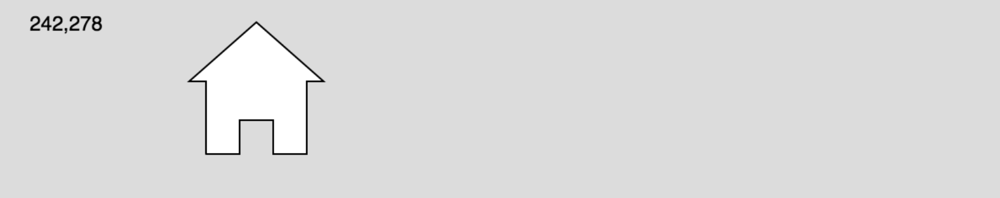

Overview
In this learning activity students will create a visual composition using various p5 shape-drawing functions. They will continue to build on their understanding of functions and their parameters to recreate the robot from lesson 1.

Overview
In this learning activity students will create a visual composition using various p5 shape-drawing functions. They will continue to build on their understanding of functions and their parameters to recreate the robot from lesson 1.
Suggested Duration
45 minutes
Objectives
Students will be able to:
Student Outcomes
Abstraction:
Algorithms:
Programming:
Vocabulary
| Functions | Functions are lines of code that perform specific tasks. |
|---|---|
| Parameters or arguments | Are the values inside of a parenthesis following the name of the function. These are used to change the outcome of a function |
| Vertices | Typically means a corner or a point where lines meet. |
| Quadrilateral | A shape with four sides |
| Triangle | A shape with three sides |
Resources
Intro
While it's great to place shapes on the canvas using built in functions, we're going to learn a shortcut in order to help us draw more complex shapes to make more interesting drawings. First, because this activity will have you problem solving, we must go over "what to do when feeling stuck":
Change The Shade and Stroke of your Shapes
You might have noticed this: if you don't change anything, your shapes are drawn with a white fill, and a thin, black stroke. To change these, you can use the fill() and stroke() functions. When given one parameter, fill() is set to a shade of gray between 0 (black) and 255 (white). To get rid of the stroke add noStroke() and to get rid of the fill, add noFill(). You can also change the thickness of the stroke by adding strokeWeight(). Remember that since the code runs from the top down, when you change the fill or stroke, that change will apply to all of the code beneath it.
It can be useful to compare the program to a person drawing from instructions. You might instruct a person to:
The square would be white and both the ellipse and the line, as well as anything else you tell the person to draw, would be gray until you tell them to switch pens again. Since the code runs from the top down, it will work the same way. If you add a white fill, and draw three shapes beneath that line of code, all three shapes will be white.
Play with the thickness of the stroke and its shade of gray here.
Draw Other Shapes and Navigate the p5.js Reference
triangle() function
quad() function
beginShape() function
Your sketch should include:
Examples of possible outputs:

To draw a polygon, first call the beginShape() function, then call the vertex(x, y) for each vertex of the polygon. End the shape with endShape(CLOSE).
Example:

Extension: Arcs
If you're up for a challenge, check out the p5.js reference to make arcs and curves.
Arcs are part of ellipses (or circles). To draw an arc, we need to specify the start angle and end angle of the portion of the ellipse that we want to draw..

In p5js, angles are specified not in degrees but a unit called RADIANS. Angles are also measured in the CLOCKWISE direction.
| Common Angle Measures | ||
| Degrees | Radians | p5.js |
| 0° | 0 | 0 |
| 45° | 𝜋/4 | QUARTER_PI |
| 90° | 𝜋/2 | HALF_PI |
| 180° | 𝜋 | PI |
| 270° | 1.5𝜋 | PI+HALF_PI |
| 360° | 2𝜋 | TWO_PI |

If you would rather work with degrees and not radians (90 instead of PI/2), add this line to your code: `angleMode(DEGREES).` Use this p5 reference cheat sheet to learn more and recreate the following: Possible Solution